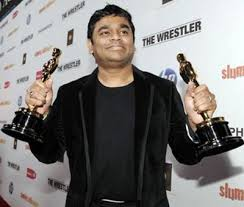

Check out my Achievements and Interests here ---->
Achievements
I was given the role of Honor certificate in Class 10. That was a great achievement for me!
I also captained the Youth For Service group in my Class 9 and TOPAZ house in Class 10.
I was selected as a KVPY Scholar

Role Model
My role model is Barack Obama.Barack Hussein Obama II (US Listeni/bəˈrɑːk huːˈseɪn ɵˈbɑːmə/, UK /ˈbærək huːˈseɪn ɵˈbɑːmə/; born August 4, 1961) is the 44th and current President of the United States, and the first African American to hold the office. Born in Honolulu, Hawaii, Obama is a graduate of Columbia University and Harvard Law School, where he served as president of the Harvard Law Review. He was a community organizer in Chicago before earning his law degree. He worked as a civil rights attorney and taught constitutional law at the University of Chicago Law School from 1992 to 2004. He served three terms representing the 13th District in the Illinois Senate from 1997 to 2004, running unsuccessfully for the United States House of Representatives in 2000.
Interests

I took keen interest on learning the keyboard(Musical Instrument :D)
Favourite Musician:
My all time favourite musician is A.R. Rehman.
Allah-Rakha Rahman (Born A. S. Dileep Kumar 6 January 1967) is an Indian composer, singer-songwriter, music producer, musician and philanthropist. Described as the world's most prominent and prolific film composer by Time, Rahman's works are noted for integrating Eastern classical music with electronic music, world music and traditional orchestral arrangements. Among his awards are two Academy Awards, two Grammy Awards, a BAFTA Award, a Golden Globe, four National Film Awards, fifteen Filmfare Awards and thirteen Filmfare Awards South. Rahman's body of work for film and stage has given him the nickname of "the Mozart of Madras", and Tamil commentators and fans call him Isai Puyal (English: the Musical Storm). In 2009, Time included Rahman on its list of the world's most influential people. The UK-based world-music magazine Songlines named him one of "Tomorrow's World Music Icons" in August 2011.
Here is A.R. Rehman's official webisite --->
